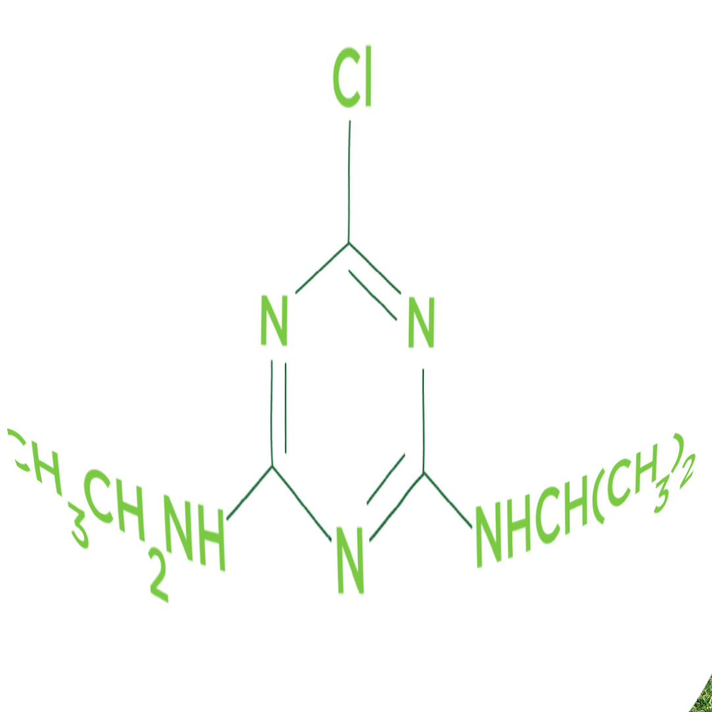
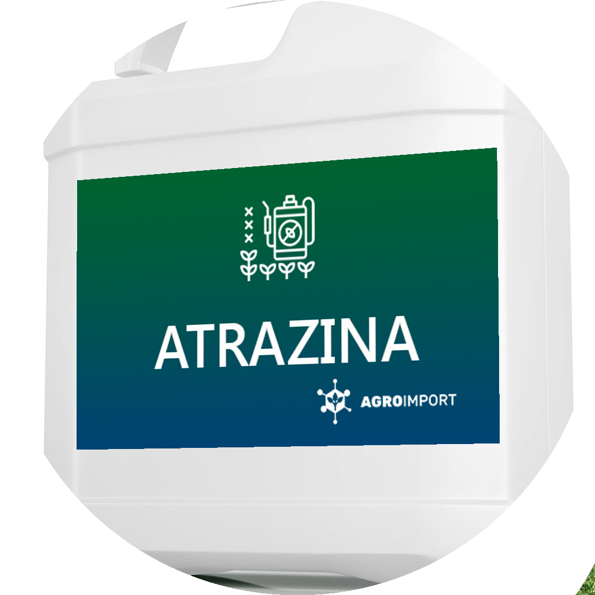
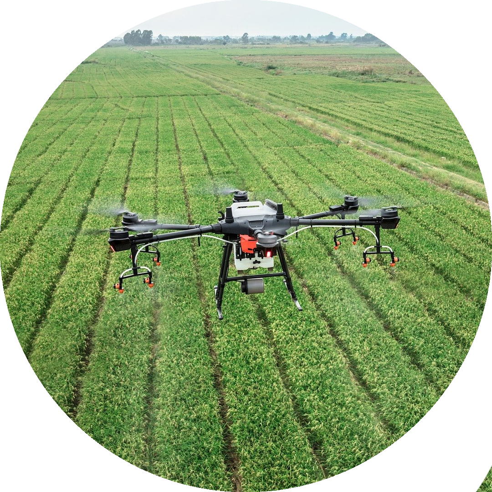

O que é a Atrazina?
A Atrazina é um herbicida amplamente utilizado na agricultura para controlar o crescimento de ervas daninhas. É uma molécula orgânica que pertence à classe dos triazinas. A sua estrutura química inclui uma cadeia carbônica principal com três anéis de triazina.
Estrutura Química
A atrazina é um herbicida amplamente utilizado na agricultura, conhecido pelo seu nome químico 6-cloro-N-etil-N'-isopropil-1,3,5-triazina-2,4-diamina. Sua fórmula molecular é C8H14ClN5 e possui um peso molecular de aproximadamente 215,68 g/mol. Este composto apresenta-se como um sólido cristalino e é solúvel em solventes orgânicos como acetona e clorofórmio. A estrutura da atrazina é composta por carbonos alifáticos, que incluem carbonos primários, secundários e terciários, dependendo da ligação que possuem com os átomos de carbono vizinhos. A cadeia carbônica da atrazina é alifática e ramificada, contendo três anéis de triazina, o que é uma característica distintiva de sua estrutura. Os grupos funcionais presentes na atrazina incluem um grupo amina (NH2), um grupo cloro (Cl), um grupo etil (C2H5) e um grupo isopropil (C3H7). Esses grupos contribuem para as propriedades químicas e reativas da atrazina. Seguindo a nomenclatura oficial, a atrazina é nomeada como 6-cloro-N-etil-N'-isopropil-1,3,5-triazina-2,4-diamina. Esta nomenclatura reflete a posição dos substituintes e a presença dos anéis de triazina, oferecendo uma descrição detalhada da sua estrutura molecular.
Modo de Ação
O ingrediente ativo ATRAZINA é absorvido pelas plantas através das raízes e se transloca via xilema até as folhas onde provoca a inibição da fotossíntese, cujos sintomas se manifestam através da clorose, necrose e morte das invasoras. O potencial herbicida da atrazina deve-se à sua ação na inibição da fotossíntese pela interrupção da reação de Hill. Sua biodisponibilidade em solos é governada essencialmente pelo equilíbrio dinâmico existente entre a solubilidade na fase aquo- sa e a capacidade adsortiva do composto no sistema coloidal do solo.
Aplicação e Persistência
A atrazina é um herbicida seletivo e de ação sistêmica amplamente utilizado na agricultura, especialmente em plantações de milho, cana-de-açúcar e sorgo. Sua aplicação pode ser feita tanto em pré-emergência quanto em pós-emergência inicial das plantas daninhas, sendo mais eficaz quando estas estão ainda jovens. A versatilidade na aplicação da atrazina faz com que ela seja uma escolha popular entre os agricultores que buscam um controle eficiente de ervas daninhas.
Impactos Ambientais
A atrazina, embora amplamente utilizada na agricultura devido à sua eficácia e baixo custo, apresenta diversos impactos ambientais que necessitam de consideração cuidadosa. A sua persistência no solo, potencial de mobilidade e efeitos sobre organismos não alvo são áreas de particular preocupação.